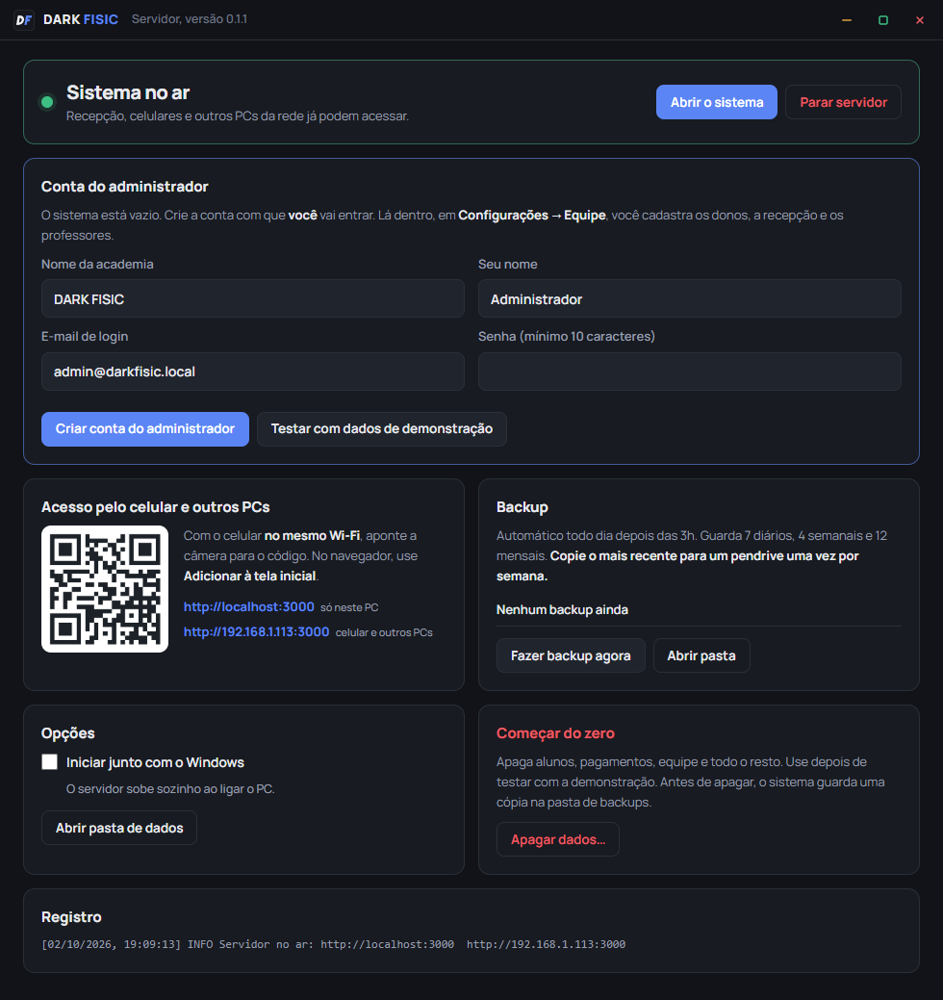
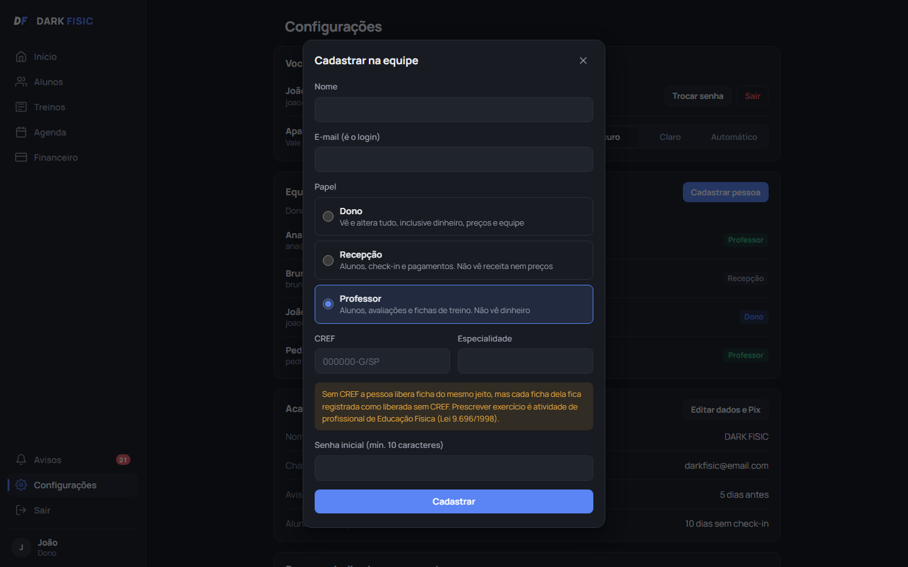
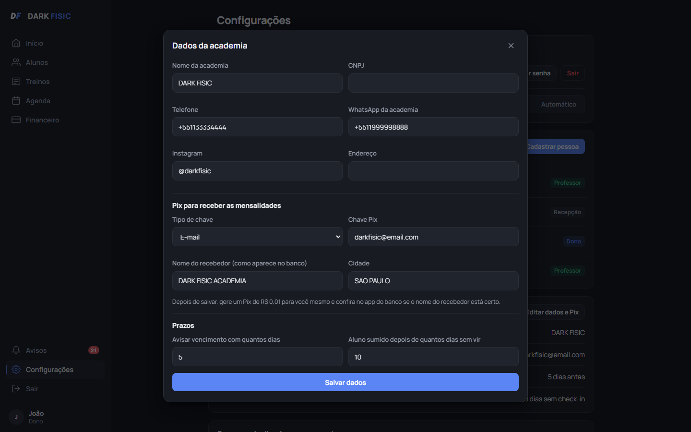
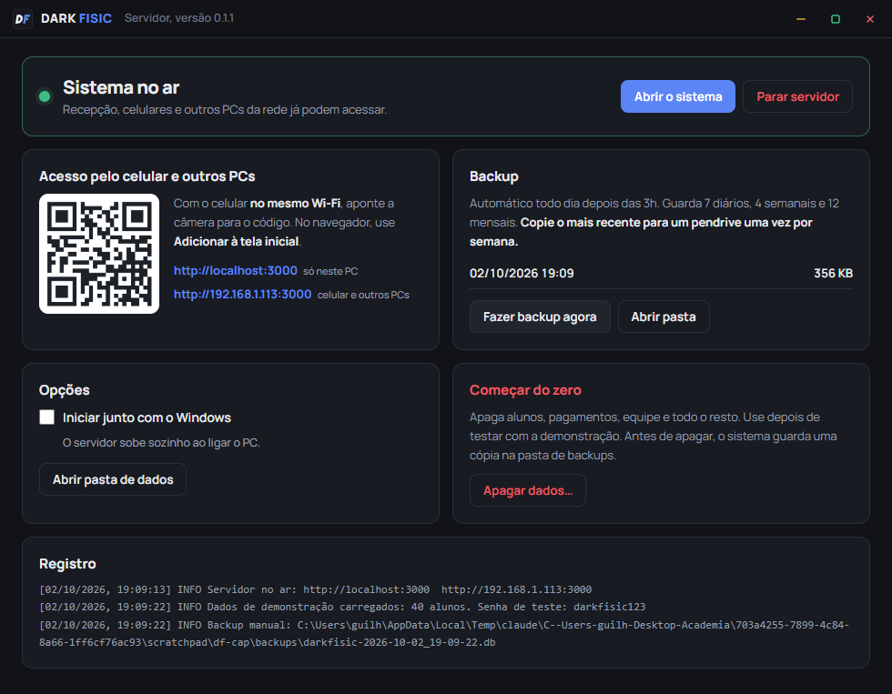
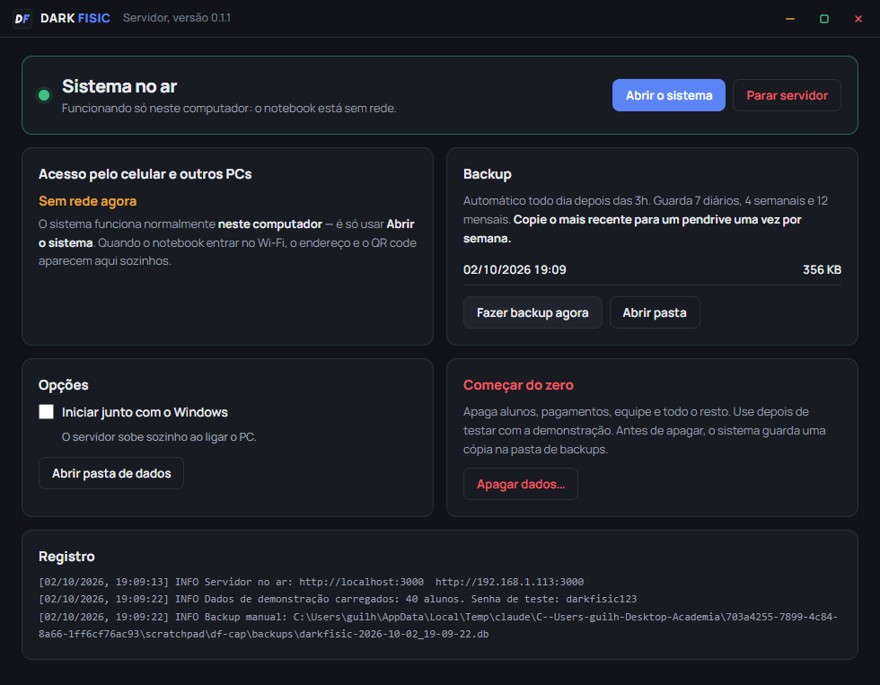
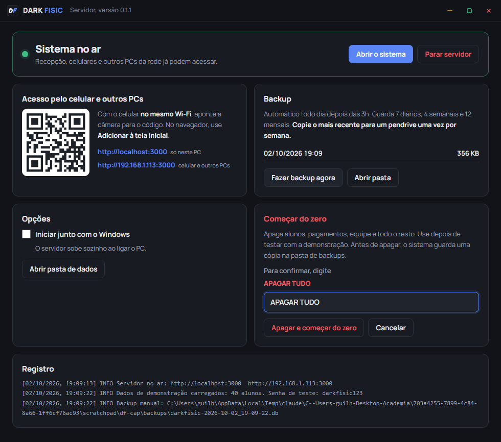

Do pendrive ao primeiro check-in: instalar no notebook da academia, criar a conta do administrador, cadastrar os donos, ligar os celulares e usar sem Wi-Fi.
O notebook da academia é o servidor: é nele que o sistema roda e onde ficam todos os dados. Os celulares e outros PCs só acessam o que está nele, pela rede.
| Você vai precisar de | Detalhe |
|---|---|
| O instalador | DARK-FISIC-Instalador-0.1.1.exe, cerca de 120 MB, num pendrive |
| O notebook da academia | Windows 10 ou 11. Não precisa de internet nem de senha de administrador |
| Os dados da chave Pix | Chave, nome do recebedor exatamente como aparece no banco, e cidade |
| Nome e e-mail de cada pessoa da equipe | E o CREF de cada professor que tiver |
| Uns 30 minutos | Mais 10 se for fixar o IP no roteador |
Pode rodar direto do pendrive, mas copiar para a área de trabalho é mais rápido.
Aparece "O Windows protegeu o computador". Clique em Mais informações e depois em Executar assim mesmo.
O aviso aparece porque o programa não tem assinatura digital paga. Não é vírus: é o mesmo aviso de qualquer programa feito por uma pessoa e não por uma empresa grande.
A pasta padrão serve. A instalação é só para o usuário do Windows que está logado, por isso não pede senha de administrador.
O atalho fica na área de trabalho e no menu Iniciar. Ao abrir, o servidor liga sozinho e aparece o painel do servidor. É ele que você vê nas próximas páginas.
Na primeira vez, o sistema está vazio e o painel mostra o cartão Conta do administrador. É a conta com que você entra para configurar todo o resto.

Já vem DARK FISIC. Dá para mudar depois.
admin@darkfisic.local é o login do administrador. Pode trocar por um e-mail seu, se preferir.
No mínimo 10 caracteres. Anote num lugar seguro: sem ela, só dá para entrar recomeçando do zero.
Depois, em Abrir o sistema, e entre com esse e-mail e essa senha.
Entre como administrador e vá em Configurações, seção Equipe, botão Cadastrar pessoa. Repita para cada dono, recepcionista e professor.

| Papel | Vê e faz | Não vê |
|---|---|---|
| Dono | Tudo: alunos, dinheiro, preços, equipe e dados da academia | nada |
| Recepção | Alunos, check-in, pagamentos, agenda | Receita do mês, inadimplência total, preços, equipe |
| Professor | Alunos, avaliações, fichas de treino, agenda | Qualquer coisa de dinheiro |
O e-mail é o login da pessoa. Cada um tem o seu: o sistema registra quem fez cada coisa.
O CREF é aviso, não trava: sem ele a pessoa libera ficha do mesmo jeito, mas vê um aviso antes e a ficha fica marcada como liberada sem CREF. Com o CREF cadastrado, a ficha é assinada com ele. A Lei 9.696/1998 reserva a prescrição de exercício a profissional de Educação Física; a decisão é de quem responde pela academia.
No mínimo 10 caracteres. No primeiro acesso, ela troca em Configurações → Trocar senha.
Em Configurações, seção Academia, botão Editar dados e Pix. Só o dono vê essa parte.

Escolha o tipo (CPF, CNPJ, e-mail, telefone ou aleatória) e cole a chave. O nome do recebedor tem de ser igual ao do banco, e a cidade também. Ao salvar, o sistema monta um código de teste e recusa dados que o banco não aceitaria.
Avisar vencimento com quantos dias: quando o plano entra em "vencendo" (padrão 5 dias). Aluno sumido depois de quantos dias: quando alguém aparece na lista de sumidos (padrão 10 dias).
Os quatro planos (Básico, Plus, Trimestral e Anual) já vêm cadastrados. Em Financeiro, clique em Editar plano em cada um para acertar preço e benefícios. Mudar o preço não altera o que já foi cobrado.
Na recepção, a tela de pagamento mostra o QR code com o valor já preenchido: o aluno aponta a câmera do app do banco e paga. O código copia e cola fica logo abaixo, para quem preferir.
O notebook é o sistema. Enquanto ele estiver desligado, ninguém usa, nem pelo celular.
No cartão Opções do painel. A partir daí, ao ligar o notebook o servidor sobe sozinho, já escondido na bandeja, sem ninguém clicar em nada.
As janelas do DARK FISIC têm barra própria: amarelo minimiza, verde põe em tela cheia e vermelho fecha. Arrastar pela barra move a janela; dois cliques nela também põem em tela cheia.
Fechar a janela não desliga o sistema: ele continua rodando no ícone ao lado do relógio, e na primeira vez o Windows mostra um aviso dizendo isso. Dois cliques no ícone reabrem o painel. Para desligar de verdade, clique com o botão direito no ícone e escolha Encerrar (tira o sistema do ar).
No Windows: Configurações → Sistema → Energia e suspensão. Em "Quando conectado, o computador entra em suspensão após", escolha Nunca. A tela pode apagar; o computador, não.
Se for usar o notebook fechado, em Opções de energia → Escolher a função do fechamento da tampa, coloque Nada a fazer quando conectado.
O endereço que os celulares usam (algo como http://192.168.1.113:3000) é dado pelo roteador e pode
mudar quando ele reinicia. Para não mudar nunca, entre na página do roteador e faça uma reserva de IP
(também chamada de DHCP estático ou IP fixo) para o notebook.
Cada roteador tem uma tela diferente; a opção costuma ficar em LAN ou DHCP. Se não conseguir, tudo bem: quando o endereço mudar, o painel mostra o novo e é só escanear o QR code de novo.
O celular não instala nada da loja: ele abre o sistema pelo navegador, direto do notebook. Para isso, os dois precisam estar no mesmo Wi-Fi.

O mesmo em que o notebook está. Dados móveis (4G/5G) não funcionam.
Toque no link que aparece. Se preferir, digite no navegador o endereço que está embaixo do QR code,
o que termina em :3000 e começa com 192.168 ou 10..
Assim o sistema ganha ícone próprio, como um aplicativo.
| Aparelho | Como colocar na tela inicial |
|---|---|
| iPhone | Abra no Safari. Toque no botão de compartilhar (quadrado com seta para cima) e depois em Adicionar à Tela de Início. Abre em tela cheia, sem a barra do navegador. |
| Android | Abra no Chrome. Toque no menu de três pontos e depois em Adicionar à tela inicial. |
Outro PC ou notebook da academia: abra o navegador e digite o mesmo endereço do celular. Não precisa instalar nada nele.
Tema claro ou escuro: cada aparelho escolhe o seu em Configurações → Aparência. O padrão é o escuro.
Se a academia ainda não tem Wi-Fi, ou a internet caiu, o sistema funciona normalmente no próprio notebook. Nada muda no uso; só os celulares ficam de fora até a rede voltar.

O servidor liga igual, com ou sem rede.
O sistema abre numa janela própria, no endereço localhost, que é o próprio notebook.
Cadastro, check-in, pagamentos, fichas: tudo funciona.
Assim que o notebook entrar numa rede, o painel mostra o endereço e o QR code sozinho, em até 15 segundos. Aí é seguir a página anterior para ligar os celulares.
Para mostrar o sistema à equipe antes de cadastrar alunos de verdade, carregue dados de exemplo. Quando terminar o teste, apague tudo e comece limpo.
Com o sistema vazio, no cartão Conta do administrador, clique em Testar com dados de demonstração. Entram 40 alunos, pagamentos, check-ins, aulas e quatro pessoas na equipe:
| Login | Papel | Para testar |
|---|---|---|
joao@darkfisic.com | Dono | Financeiro, equipe, dados da academia |
bruna@darkfisic.com | Recepção | Check-in e pagamento, sem ver a receita |
pedro@darkfisic.com | Professor com CREF | Avaliação, montar e liberar ficha |
ana@darkfisic.com | Professora com CREF | Aulas coletivas |
A senha de todos é darkfisic123. Ela só existe na demonstração.

Clique em Apagar dados…
Em maiúsculas, com espaço. Depois clique em Apagar e começar do zero.
O sistema volta ao estado da primeira abertura. Siga de novo da página 3.
O sistema faz backup sozinho, mas a cópia fica no próprio notebook. Se ele for roubado, cair ou o disco morrer, o backup vai junto. Por isso existe a cópia semanal no pendrive.
| O quê | Como funciona |
|---|---|
| Backup automático | Um por dia, depois das 3h da manhã. Guarda os 7 últimos diários, 4 semanais e 12 mensais |
| Backup na hora | Painel → cartão Backup → Fazer backup agora |
| Antes de apagar tudo | O botão Começar do zero faz uma cópia com nome próprio (antes-do-reset), que a limpeza automática nunca apaga |
| Antes de atualizar | Se uma versão nova mudar a estrutura do banco, o sistema faz uma cópia antes |
Painel → cartão Backup → Abrir pasta. Copie o arquivo mais novo (o nome tem a data) para um pendrive ou para o Google Drive. Leva um minuto.
Na bolsa, em casa, na gaveta do escritório. É isso que separa "perdemos uma semana" de "perdemos a academia inteira".
Na pasta %LOCALAPPDATA%\DarkFisic do notebook: dados (o banco, com o sistema inteiro),
backups e logs. Os botões Abrir pasta de dados e Abrir pasta do painel levam direto a elas.
A pasta fica fora do OneDrive de propósito: sincronizar um banco aberto corrompe o arquivo.
Rode o instalador novo por cima do antigo, sem desinstalar antes. Os dados ficam, e restos da versão anterior são limpos sozinhos. A primeira abertura depois de instalar demora um pouco mais: o Windows examina os arquivos novos. Desinstalar o programa também não apaga os dados.
O cartão Registro, no fim do painel, mostra os últimos eventos do servidor. Se precisar de ajuda, tire um print dele.
| O que acontece | O que fazer |
|---|---|
| O celular não abre o sistema | Confira se está no mesmo Wi-Fi do notebook, e não no 4G. Depois confira no painel se o endereço mudou e escaneie o QR code de novo. |
| O painel diz "Sistema no ar", mas nenhum celular abre | É o firewall do Windows. Em Segurança do Windows → Firewall → Permitir um aplicativo, marque o DARK FISIC em Privada. |
| "A porta 3000 já está em uso" | Outro programa ocupou a porta. Reinicie o notebook. |
| O sistema pede login toda hora | A sessão dura 12 horas. Depois disso, é normal pedir de novo. |
| Esqueci a senha de administrador | Outro dono pode redefinir em Configurações → Equipe. Se não houver outro dono, só recomeçando do zero; por isso, cadastre pelo menos dois donos. |
| Tudo parado, ninguém acessa | Procure o ícone do DARK FISIC na bandeja, ao lado do relógio. Se não estiver lá, abra pelo atalho da área de trabalho. |
| Tarefa | |
|---|---|
| ☐ | Instalar e permitir no firewall (redes privadas) |
| ☐ | Criar a conta do administrador e anotar a senha em local seguro |
| ☐ | Cadastrar pelo menos dois donos, a recepção e os professores (com CREF, quando tiverem) |
| ☐ | Preencher dados da academia e chave Pix; conferir preços dos planos |
| ☐ | Marcar Iniciar junto com o Windows e desligar a suspensão |
| ☐ | Reservar o IP do notebook no roteador |
| ☐ | Colocar o sistema na tela inicial de cada celular da equipe |
| ☐ | Fazer um backup agora e copiar para o pendrive |